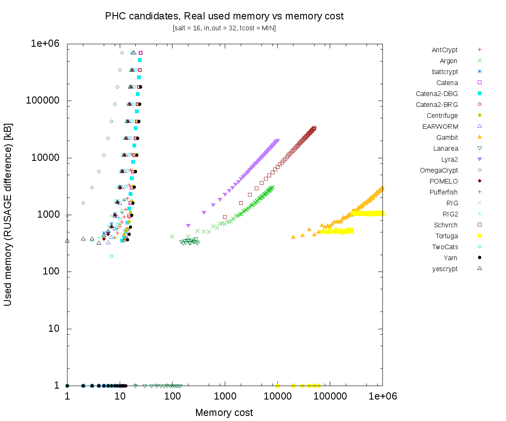
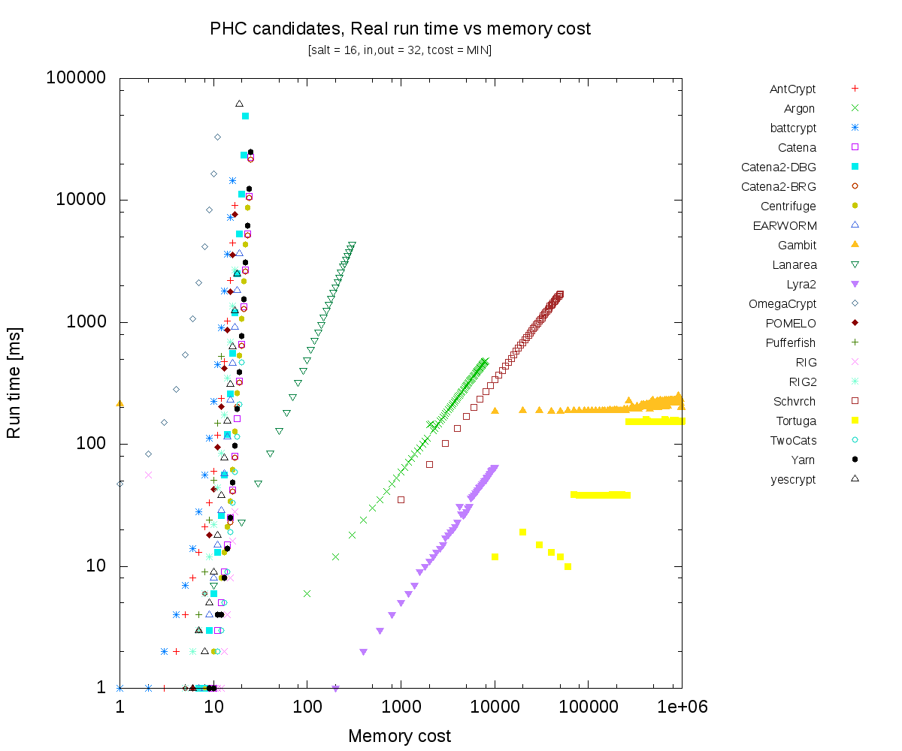

Figure 4: Test 2 – Variable time cost (impact to run time)
The candidate functions do not implement the API parameters
consistently.
Some functions implement only one of the cost
parameters (memory or time) and the scale differs significantly.
The following tests take the password hash function as a
black-box,
supposing that invalid or unsupported parameters
combination is detected and function returns an error.
The tests always use one input parameter as a variable and measure run time and memory consumption.
All test uses special utility which measures difference in used memory using
getrusage() system call and
run time using clock_gettime(CLOCK_MONOTONIC).
The test run as special forked process started for each test separately.
The tests are repeated for 3 times and arithmetic mean of measurements is used.
Because most of the algoritmhs are in reference source without optimization, performance comparisons does not make sense.
The intention of tests it to compare limits and generic behaviour of algorithms.
The repository copies source code of PHC algoritms and compiles static library for each algorithm.
All changes to submitted code are tracked by quilt, see patches subdirectory
in git (separate for every algorithm).
(Changes includes only makefile modification for library build fixes, if neccessary.)
All code and output is on GitHub - https://github.com/mbroz/PHCtest.
Included are all submitted algoritms, except PolyPassHash (cannot be tested this way).
Added also Catena2 and RIG2 as send to mailing list.
Algorithms are in default (if possible reference) configurations. See source code for more details.
plen min plen max out len min out len max mcost min mcost max tcost min tcost max
| | | | | | | | |
Antcrypt | | 239 | | | | | | |
Argon | 0 | 256 | | 32 | 1 | 1<<26 | 1 | |
battcrypt | | | | 64 | | | | |
Catena | | | | 64 | 18 | 63 | | |
Catena2-BRG| | | | 64 | | | | |
Catena2-DBG| | | | 64 | | | | |
Centrifuge | | | | | | 63 | | 63 |
EARWORM | | | | | | | | |
Gambit | | 151 | | | | | | |
Lanarea | 1 | | mult 32 | 1 | | 1 | |
Lyra2 | | | | | | | 4 | |
Makwa | | | | | | | | |
MCS_PHS | | 238 | 4 | 64 | | | | |
OmegaCrypt | | 255 | 16,20,28,32,64 | | | | |
Parallel | | | | 64 | |126 << 16| | 106 |
POMELO | | | | 128 | | | | |
Pufferfish | | ? | | ? | | | | |
RIG | | | | 64 | | | | |
RIG2 | | | | 64 | | | | |
Schvrch | | | | | | | | |
Tortuga | | | | | | | | |
TwoCats | | | 32 | 32 | | | | |
Yarn | | | | 64 | | | | |
yescrypt | | | 32 | 32 | | | | |
The goal is to verify and compare real used memory according
to memory cost parameter.
Test also compares impact to run time (large used memory accesses are
expensive).
salt 16 bytes
input 32 bytes
output 32 bytes
|mcost_min|mcost_step|mcost_max|tcost|
antcrypt | 0 | 1 | 17 | 0 |
argon | 0 | 100 | 8000 | 0 |
battcrypt | 0 | 1 | 16 | 0 |
catena | 0 | 1 | 25 | 0 |
catena2-dbg| 0 | 1 | 25 | 0 |
catena2-brg| 0 | 1 | 25 | 0 |
centrifuge | 0 | 1 | 23 | 0 |
earworm | 0 | 1 | 19 | 1 |
gambit | N/A - cost/memory dependent |
lanarea | 0 | 10 | 300 | 1 |
lyra2 | 0 | 200 | 10000 | 1 |
makwa | N/A - mcost unused |
mcs_phs | N/A - cost/memory dependent |
omegacrypt | 0 | 1 | 11 | 0 |
parallel | N/A - mcost unused |
pomelo | 0 | 1 | 17 | 0 |
pufferfish | 0 | 1 | 15 | 0 |
rig | 0 | 1 | 17 | 1 |
rig2 | 0 | 1 | 17 | 1 |
schvrch | 0 | 1000 | 50000 | 0 |
tortuga | 0 | 10000 |1048575 | 0 |
twocats | 0 | 1 | 20 | 0 |
yarn | 0 | 1 | 25 | 0 |
yescrypt | 0 | 1 | 20 | 0 |


Figure 2: Test 1 – Variable memory cost (impact to run time)
The goal is to verify and compare run time according to time cost parameter.
Test also compares impact to used memory (in theory there shouldn't be
significant increase).
salt 16 bytes
input 32 bytes
output 32 bytes
|tcost_min|tcost_step|tcost_max| mcost |
antcrypt | 0 | 1 | 30 | 10 |
argon | 0 | 10 | 300 | 500 |
battcrypt | 0 | 1 | 20 | 5 |
catena | 0 | 5 | 100 | 18 |
catena2-brg| 0 | 5 | 100 | 14 |
catena2-dbg| 0 | 5 | 100 | 14 |
centrifuge | 0 | 1 | 28 | 0 |
earworm | 0 | 500 | 20000 | 10 |
gambit | N/A - cost/memory dependent |
lanarea | 0 | 1 | 8 | 150 |
lyra2 | 0 | 1000 | 20000 | 100 |
makwa | 0 | 10000 | 300000 | 0 |
mcs_phs | N/A - cost/memory dependent |
omegacrypt | 0 | 1 | 9 | 2 |
parallel | 0 | 1 | 26 | 0 |
pomelo | 0 | 1 | 15 | 5 |
pufferfish | 0 | 1 | 9 | 10 |
rig | 0 | 1000 | 20000 | 5 |
rig2 | 0 | 1000 | 20000 | 5 |
schvrch | 0 | 2000 | 200000 | 1000 |
tortuga | 0 | 10000 | 1048575 |100000 |
twocats | 0 | 1 | 20 | 7 |
yarn | 0 |100000 |10000000 | 15 |
yescrypt | 0 | 10 | 300 | 10 |
Figure 3: Test 2 – Variable time cost (impact to memory use)
Figure 4: Test 2 – Variable time cost (impact to run time)
The test illustrates that run time is not dependent on input length.
Parameters are selected so run time was cca 50ms (on tested machine).
salt 16 bytes
output 32 bytes
input 1 - 300, step 1 bytes
| mcost| tcost|
antcrypt | 0 | 800|
argon | 0 | 2000|
battcrypt | 0 | 17|
catena | 18 | 0|
catena2-brg| 14 | 10|
catena2-dbg| 10 | 10|
centrifuge | 0 | 21|
earworm | 0 | 1000|
gambit |30001 | 30001|
lanarea | 1 | 600|
lyra2 | 3 | 10000|
makwa | 0 | 30000|
mcs_phs | 0 | 30000|
omegacrypt | 0 | 1|
parallel | 0 | 11|
pomelo | 0 | 13|
pufferfish | 0 | 12|
rig | 1 |500000|
rig2 | 1 | 3000|
schvrch | 0 | 12000|
tortuga | 0 | 80000|
twocats | 7 | 12|
yarn | 0 |500000|
yescrypt | 10 | 10|
Figure 5: Test 3 – Impact of input length to run time
The test illustrates that run time is not dependent on output length.
Parameters are selected so run time was cca 50ms (on tested machine).
salt 16 bytes intput 32 bytes output 1 - 300, step 1 bytes mcost and tcose - same as in previous test

Figure 6: Test 4 – Impact of output length to run time